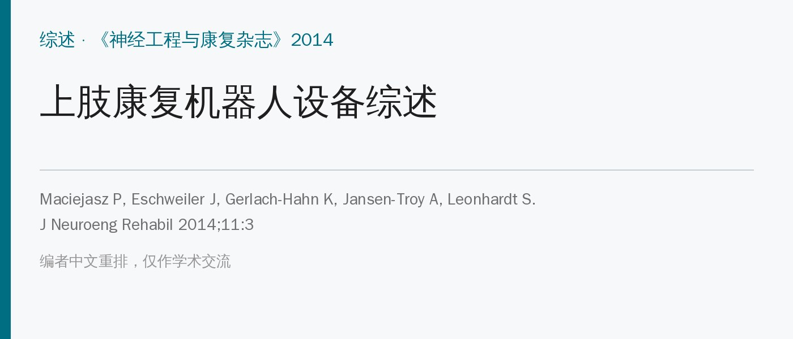
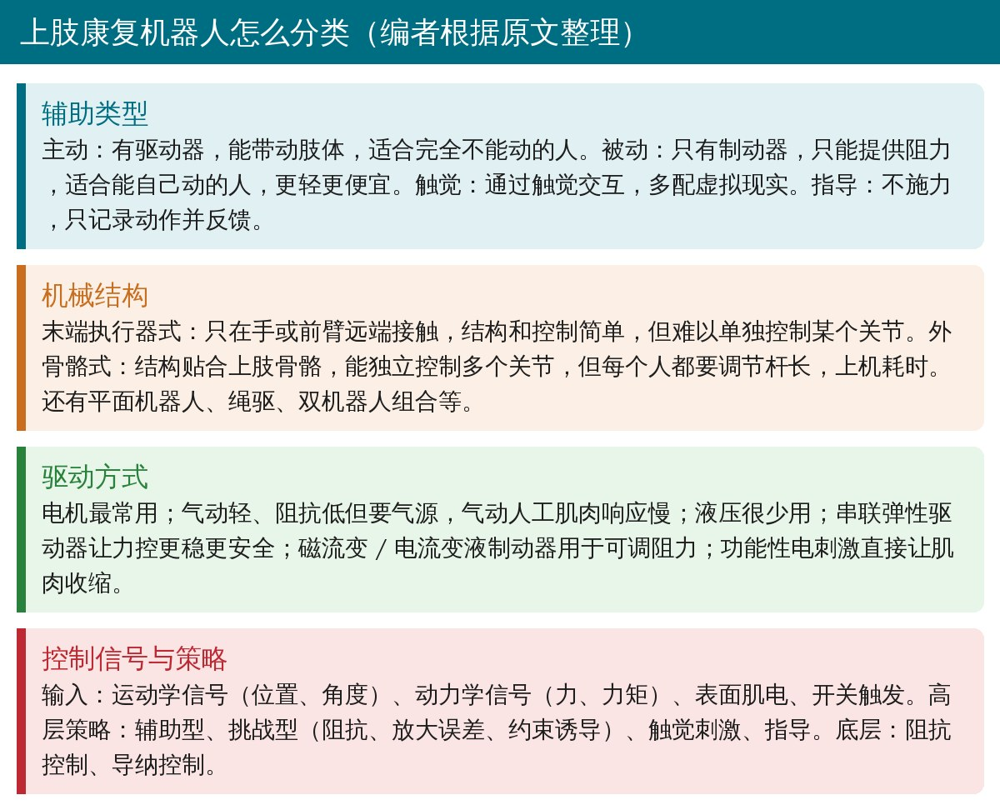
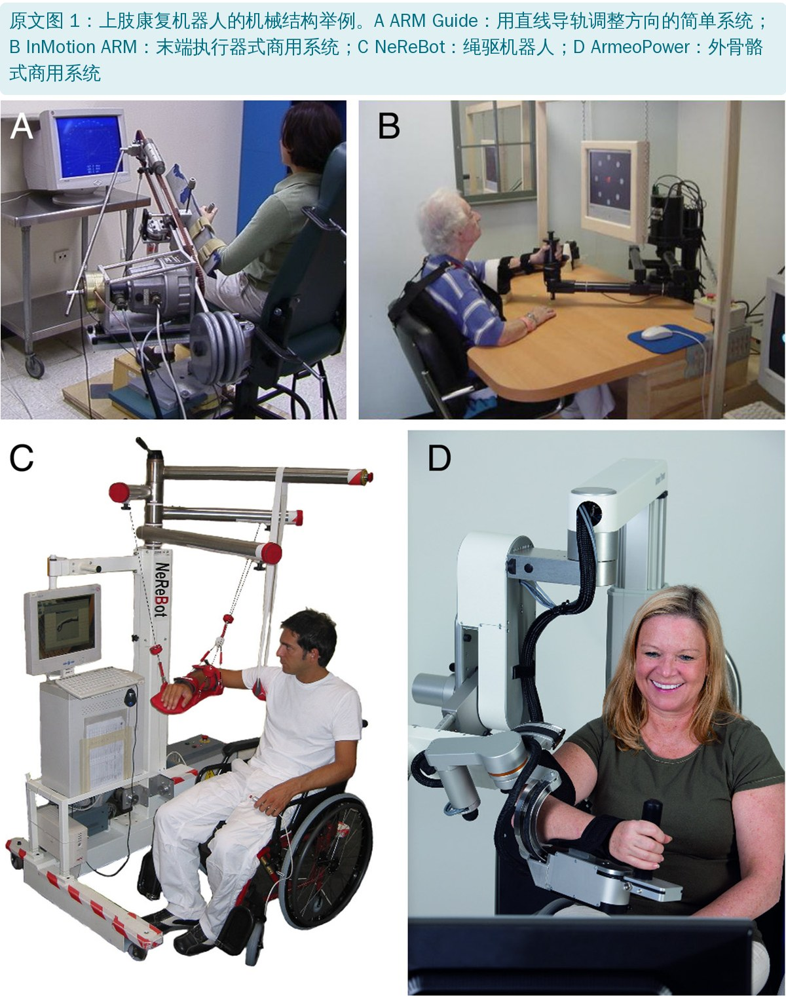
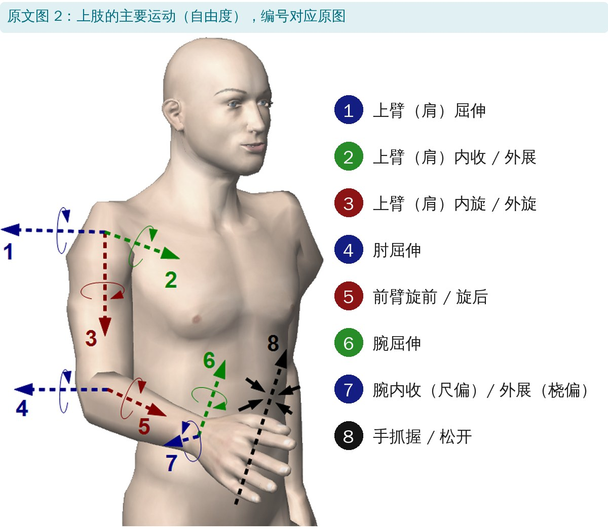
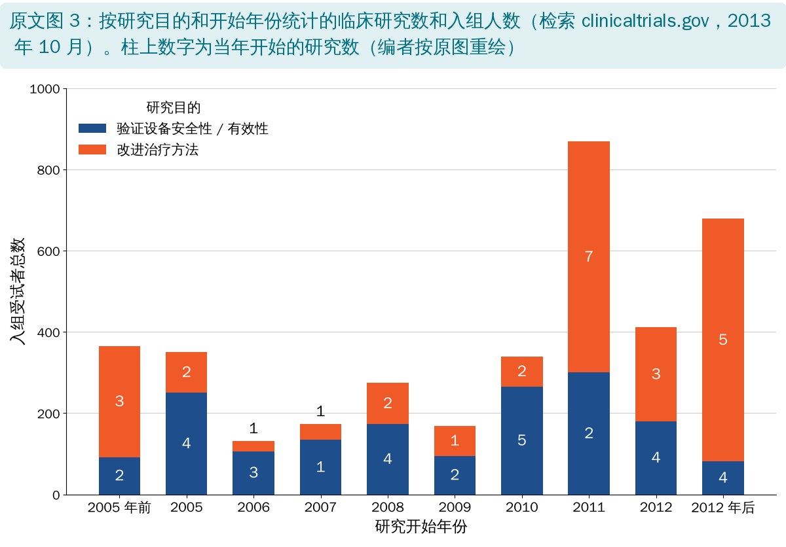

🔖原文信息（编者中文重排）
📚 文献信息
▪ Maciejasz P, Eschweiler J, Gerlach-Hahn K, Jansen-Troy A, Leonhardt S. A survey on robotic devices for upper limb rehabilitation. J Neuroeng Rehabil. 2014;11:3. doi:10.1186/1743-0003-11-3
▪ 作者来自德国亚琛工业大学医学工程和医学信息技术研究所
▪ 文章类型：技术综述，汇总了 120 多个上肢康复机器人系统（含研发中的），偏工程视角
神经系统疾病后的上肢康复，效果很大程度取决于开始时间、训练时长、强度和任务导向，以及患者的注意力和努力程度。大量重复的协调动作训练对治疗师来说负担很重，而住院康复时间越来越短、老龄化又让需求越来越大。
机器人能不知疲倦地做重复训练，但现实是：文献里描述的设备很多，真正进入临床的很少，进了临床的效果也没有预期那么好。这篇综述的价值在于把各种技术方案摆在一起比较：应用领域、目标人群、辅助类型、机械结构、驱动、控制和临床证据。

🔖上肢康复机器人的分类（编者根据原文表 2～6 整理）
• 日常生活辅助（助力、震颤抑制）：需求大但设备很少，因为必须轻、便携、安全、便宜，而多关节助力就要多个驱动器，又重又耗电；例如 PowerGrip 抓握辅助、WOTAS 震颤抑制矫形器
• 训练治疗：绝大多数设备属于这类，多数只能在康复机构由专业人员操作，价格让个人难以承受
• 有研究发现，上机准备超过 5 分钟，很多治疗师就不愿再用，所以设备要直观、上机快、价格合理
• 目标人群几乎都是卒中患者；脑外伤、脊髓损伤、多发性硬化、脑瘫、特发性震颤等研究很少
| 术语 | 说明 |
|---|---|
| 主动设备 | 能带动肢体运动，需要主动驱动器，重量可能增加；也适用于完全不能动的患者 |
| 被动设备 | 不能带动肢体，但在动作方向错误时可施加阻力；只适用于能自己活动肢体的患者；除制动器外没有驱动器，通常比主动设备轻 |
| 触觉设备 | 通过触觉与使用者交互，多数提供一定阻力，常有振动等其他感觉，有时也能产生特定动作，但力通常较小；常与虚拟环境一起用于康复 |
| 指导设备 | 既不辅助也不阻碍动作，但能追踪动作并对表现给予反馈；与触觉设备一样常配虚拟环境 |
| 主动训练 | 患者主动活动肢体，设备可给予一定辅助；上面任何一类设备都能做 |
| 被动训练 | 患者保持被动，由设备带动肢体；需要主动设备，持续被动活动训练就是一例 |
原文表 2：辅助类型相关术语（中文翻译）
注意：主动设备也能做被动训练，比如持续被动活动设备本身是主动的，但患者不用力，所以训练是被动的。被动和无驱动设备更简单、安全、便宜，更适合康复后期，而不是早期严重运动障碍的训练。

🔖原文图 1：几种典型结构
| 术语 | 说明 |
|---|---|
| 末端执行器式设备 | 只在肢体最远端接触患者，结构简单；但当可能的自由度多时，难以控制肢体位置 |
| 外骨骼式设备 | 机械结构与肢体骨骼对应，肢体每一节都连在设备相应的一节上；能独立、同时、精确地控制多个关节，但比末端执行器式复杂；限制或辅助一个或多个关节运动的矫形器也可算作外骨骼式 |
| 平面机器人 | 通常为末端执行器式，只在某个平面内运动；能降低成本，但可训练的动作范围也变小；末端在平面内运动时，肢体关节仍可在三维空间中运动 |
| 反向驱动性 | 设备处于被动状态时，患者也能推动设备；不束缚肢体、让肢体保持舒适姿势，提高安全性 |
| 模块化 | 可加装可选部件，以适应特定病情或做更多训练 |
| 可重构性 | 不加部件就能改变机械结构，以适应患者病情或做其他形式的训练 |
原文表 3：机械结构相关术语（中文翻译）
• 末端执行器式（如 InMotion ARM / MIT Manus、NeReBot）：结构和控制简单，但末端最多 6 个运动方向，关节一多，手臂会出现多种可能姿势，有受伤风险
• 外骨骼式（如 ArmeoPower）：能同时独立控制多个关节，但每段杆长都要按患者调，上机耗时；肩关节旋转中心会随动作移动，需要特殊机构保证安全
• 混合式：ArmeoSpring 只有肘、前臂、腕是外骨骼，肩不受约束，适配快；也有用两台机器人模拟治疗师双手的
• 工业机器人便宜，但阻抗远高于人的上肢，不宜与患者紧密接触；康复机器人多设计成低阻抗、可反向驱动
• 平面机器人降低成本，选好工作平面就能满足多数训练；可重构设备（如 UHD 只有 2 个自由度却能换三种构型）能降低成本，但目前很少

🔖原文图 2：上肢主要运动方向
| 术语 | 说明 |
|---|---|
| 电动驱动器 | 用电流驱动；最常见，容易提供较大功率并储能；商用选择多，但有些较重或阻抗太高，不适合康复 |
| 液压驱动器 | 用液压（通常是油）驱动，能产生大的力；系统较复杂，需保持油压并防漏；商用液压驱动器也重，所以康复机器人只用专门设计的 |
| 气动驱动器 | 用压缩空气驱动，阻抗更低、比电动轻；需要专门的压缩机或压缩空气罐 |
| 气动人工肌肉（McKibben 型） | 内胆外包编织网套，充气时像肌肉一样缩短；较轻，只能单向出力；动态响应慢且非线性，难控制 |
| 串联弹性驱动器 | 在驱动器后串联弹性元件；康复机器人中较常见，能降低惯量和固有阻抗，力控更准更稳，更安全 |
| 功能性电刺激 | 用电流兴奋神经，使其支配的肌肉收缩，用身体自己的“驱动器”产生动作；但难以做到精确、可重复的动作，还可能让患者疼痛 |
原文表 4：驱动方式相关术语（中文翻译）
• 被动设备需要可调阻力：磁粉制动器（ARM Guide）、磁流变液 / 电流变液制动器（PLEMO 等），后者响应快、可重复
• 功能性电刺激能让肌肉真正收缩、维持肌容积，但会引起强烈不自主收缩、可能疼痛，且受疲劳和电极接触影响，难以精确控制
• 驱动器放在关节旁边，传动简单但远端重；放在近端减轻远端重量，但传动机构有摩擦、更难控制
| 术语 | 说明 |
|---|---|
| 动力学信号 | 受试者作用于设备各关节（外骨骼式）或末端（末端执行器式）的力或力矩 |
| 运动学信号 | 设备或肢体各节段、关节的位置、方向、速度和加速度 |
| 触发信号 | 启动某个动作的信号；简单的用开关或按钮，复杂的设定某个信号的阈值（如对应一定肌肉收缩程度的表面肌电值） |
原文表 5：控制输入信号相关术语（中文翻译）
• 表面肌电控制能读出“想动”的意图，多用于肘关节（肱二头肌、肱三头肌信号好测）；最成功的是 MIT 的单自由度便携肘矫形器，后来商品化为 Myomo
• 用健侧控制患侧：Bi-Manu-Track、ARMOR 等让健手带动患手，适合偏瘫
• 反馈：视觉、触觉、听觉、电刺激；虚拟现实让训练更有趣、可快速切换任务、提高注意力和动机
| 术语 | 说明 |
|---|---|
| “高层”控制策略 | 专门为诱导运动可塑性而设计的控制算法 |
| 辅助型控制 | 设备提供物理辅助，帮助患者完成想做的动作 |
| 挑战型控制 | 设备给患者增加难度，挑战其完成动作 |
| 触觉刺激 | 把机器人当作触觉接口，在虚拟现实环境中完成活动 |
| 指导型控制 | 既不辅助也不阻碍，只量化表现并给予视觉、听觉等反馈 |
| “底层”控制策略 | 通过控制力、位置、阻抗或导纳来实现“高层”策略 |
| 导纳控制 | 测量使用者施加的力，设备产生相应位移 |
| 阻抗控制 | 测量肢体运动，机器人给出相应的力反馈 |
原文表 6：控制策略相关术语（中文翻译，多数参照 Marchal-Crespo 和 Reinkensmeyer）
• 辅助型：阻抗式（偏离轨迹才给回正力）、减重式、肌电式（触发或按比例辅助）、按表现自适应；触发式容易让患者“偷懒”，只用刚好能触发的力
• 挑战型：阻力训练、放大误差（误差越大学得越快）、约束诱导（限制健侧，逼患侧用）
• 底层：阻抗控制交互稳定但自由空间精度差；导纳控制精度高但动态交互可能不稳，可用串联弹性驱动器解决
| 类别 | 说明 |
|---|---|
| 0 类 | 初步可行性研究：少量健康志愿者，常用原型机，评估安全性和临床可行性 |
| Ⅰ类 | 试点（概念考量）研究：小样本目标疾病患者，测试安全性、可行性和潜在获益；无对照组或以健康人为对照 |
| Ⅱ类 | 概念发展研究：验证设备疗效；干预描述标准化，有对照组、随机分组和盲法评估 |
| Ⅲ/Ⅳ类 | 概念展示 / 验证研究：进一步评估疗效；与Ⅱ类相似，但通常是多中心、大样本 |
原文表 7：本文对康复机器人临床试验的分类（基于 Lo 的指南，补充了 0 类）

🔖原文图 3：临床研究数量和入组人数
• 检索 clinicaltrials.gov 得到 197 项试验，62 项相关，排除 4 项后剩 58 项：31 项验证设备，27 项探索更好的治疗方式；54 项只纳入卒中
• 近三年“改进治疗方法”类研究的入组人数明显增加，说明重心正从“设备能不能用”转向“怎么用最好”
• 系统综述：机器人训练能改善卒中后运动损伤和肌力，但不能改善日常生活能力
• 首个大型多中心随机试验（MIT-Manus）：机器人训练与同等强度的治疗师训练效果没有差别，总费用也相近
• 所以机器人最大的优势是提供大剂量重复训练而不累垮治疗师，再加上游戏化的动机和量化反馈
• 目标不只是最大化重复次数，还要最大化患者的注意力和努力
• 单调重复不如变换任务，技能保持更好
• 自适应、按需辅助优于固定模式；但自适应算法若让患者偷懒，反而可能拖慢恢复
• 学习靠误差驱动，适当放大误差可能进步更快；内隐学习效果可能更大
• 很多功能改善更依赖腕和手，而不是肩肘的活动度
• 关键不是最大肌力，而是主动肌和拮抗肌的时机协调
• 这是技术综述，不是疗效综述：重点在设备怎么设计，临床结论主要转引其他系统综述
• 表格中大量设备只有健康人或个案研究，130 个条目里商用系统只有十几个，Ⅱ类以上研究很少
• 时效性：检索截至 2013 年，之后出现了很多新设备和更大的试验，读的时候要注意
• 非系统检索：作者也承认肯定有遗漏，选择标准（排除纯机械装置、等速设备等）有一定主观性
• 同一设备两种描述：正文说 Umemura 的系统是轮椅安装的外骨骼，表 1 却写成固定式末端执行器式系统
• 设备名称不一致：正文把手指触觉设备叫 HAFI，表 1 中对应条目叫 HIFE
• 运动描述不对：正文说 UHD 可以训练“前臂屈伸和腕”，前臂只有旋前旋后，表 1 写的也是前臂旋前旋后
• “批准”与“许可”混用：正文说 Myomo 获得了 FDA“批准”，表 1 写的是 FDA“许可”（clearance），这是两种不同的上市路径
• 缩写未定义：表 1 中 Bi-Manu-Track 的研究对象写成“sA”，图例里只有“aS”（急性卒中）
• 引用编号不一致：正文介绍 iPAM 引用 [126]，表 1 写的是 [67]
• 小错：表 6 把 coaching 写成 couching；图 3 纵轴“subjects”拼成“subjets”；“horizontal”拼成“horizonatal”；“clinical trial”写成“clinical train”
• 机器人是工具，不是疗法本身：与同等强度的人工训练效果相近，价值在于帮治疗师“放大”训练剂量
• 选设备看病人：完全不能动用主动设备；能部分活动用被动 / 触觉设备；后期用指导型配虚拟现实
• 设计训练时防偷懒：触发式辅助和自适应算法都可能让患者少用力，要监控主动参与
• 别只练肩肘：功能改善更多依赖腕和手，训练重点放在协调而不是单纯肌力
• 上机时间很关键：超过 5 分钟就可能用不下去，引进设备时要算上这部分成本
自由度一栏：[ ] 表示被动（只提供阻力），{ } 表示无驱动；“*”表示设备运动方向不对应单一解剖运动，而是多种运动的组合。研究类别见原文表 7；括号中的数字为使用该系统治疗的人数。设备名称保留原文。
| 系统名称及文献 | 自由度 | 支持的运动 | 主要控制输入 | 驱动器 | 类型；应用领域 | 开发阶段；补充信息 |
|---|---|---|---|---|---|---|
| 辅助肩运动的系统 | ||||||
| Kiguchi [114] | 2 | 肩屈伸，内收外展 | 表面肌电 | 直流电机（×2） | 固定式系统（外骨骼式）；助力 | 0 类研究：1 名健康人 |
| 辅助肘运动的系统 | ||||||
| Cheng [9] | 1 | 肘屈伸 | 表面肌电 | 直流电机 | 固定式系统；物理治疗 | Ⅰ类研究：5 例卒中 + 5 名健康人 |
| Cozens [10] | 1 | 肘屈伸 | 关节角度 | 伺服电机 | 固定式系统；物理治疗 | Ⅰ类研究：10 例卒中 + 多发性硬化 |
| Kiguchi [170] | 1 | 肘屈伸 | 表面肌电 | 直流电机 | 固定式系统（外骨骼式）；物理治疗 | 0 类研究：2 名健康人 |
| MARIONET, Sulzer [142] | 1 | 肘屈伸 | 关节角度 | 交流伺服电机（串联弹性驱动器） | 固定式系统（末端执行器式）；物理治疗 | 0 类研究：6 名健康人 |
| Mavroidis [11] | 1 | 肘屈伸 | 力 / 力矩 | 直流电机 | 便携矫形器（持续被动活动设备）；物理治疗 | 原型机 |
| MEM-MRB, Oda [104] | [1] | [肘屈曲] | 关节角速度，力矩 | 磁流变液制动器 | 固定式系统；物理治疗 | 0 类研究：1 名健康人 |
| Myomo e100, Myomo, Inc.; Stein [172] | 1 | 肘屈伸 | 表面肌电 | 直流电机（×1） | 便携矫形器；物理治疗 | 商用系统（FDA 许可）；Ⅰ类研究：8 例慢性卒中 |
| Ögce [171] | 1 | 肘屈伸 | 表面肌电 | 直流步进电机 | 可穿戴肩肘矫形器；物理治疗 | Ⅰ类研究：2 例创伤性臂丛损伤 |
| Pylatiuk [153] | 1 | 肘屈伸 | 表面肌电 | 液压 | 可穿戴矫形器；物理治疗 | 首台原型机 |
| Rosen [169] | 1 | 肘屈伸 | 表面肌电 | 直流电机（×1） | 固定式系统（外骨骼式）；助力 | 0 类研究：1 名健康人；为 CADEN-7 的前身 |
| Song [12] | 1 | 肘屈伸 | 表面肌电 | 交流伺服电机 | 固定式系统（末端执行器式）；物理治疗 | Ⅰ类研究：8 例慢性卒中 [12]，7 例慢性卒中 [13]，3 例慢性卒中 [14] |
| Vanderniepen [143] | 1 | 肘屈伸 | 关节角度 | 电机（×2）（串联弹性驱动器） | 可穿戴矫形器；骨科物理治疗 | 原型机 |
| 辅助前臂运动的系统 | ||||||
| Kung [15] | 1 | 前臂旋前旋后 | 关节角度，力矩 | 交流伺服电机（1） | 固定式系统；物理治疗 | Ⅰ类研究：7 例慢性卒中 + 8 名健康人 [16] |
| 辅助腕运动的系统 | ||||||
| ASSIST, Sasaki [146] | 1 | 腕屈曲 | 关节角度 | 旋转式气动驱动器（×2） | 可穿戴矫形器；助力 | 0 类研究：5 名健康人 |
| Colombo [17] | 1 | 腕屈伸 | 力矩 | 未说明 | 固定式系统；物理治疗 | Ⅱ类研究：20(8) 例慢性卒中 |
| Hu [18] | 1 | 腕屈伸 | 表面肌电 | 电机 | 固定式系统（末端执行器式）；物理治疗 | Ⅰ类研究：15 例慢性卒中 |
| Loureiro [100] | [1] | [腕屈伸] | 手部运动（震颤） | 磁流变液制动器 | 可穿戴矫形器；震颤抑制 | Ⅰ类研究：1 例特发性震颤 |
| PolyJbot, Song [175] | 1 | 腕屈伸 | 表面肌电，关节角度和力矩 | 直流伺服电机（×1） | 固定式系统；物理治疗 | Ⅱ类研究：27(15) 例慢性卒中 [19] |
| 辅助手指运动的系统 | ||||||
| Amadeo, tyromotion GmbH | 5 | 每根手指屈伸 | 末端位置和力 | 电机 | 固定式系统（末端执行器式）；物理治疗 | 商用系统；Ⅰ类研究：7 例急性卒中 [20] |
| Chen [21] | 5 | 每根手指独立直线运动 | 手指位置和力，表面肌电 | 直流直线电机（×5） | 固定式系统（末端执行器式）；物理治疗 | 0 类研究：1 名健康人 |
| CyberGrasp, CyberGlove Systems LLC; Turner [22] | [5] | [对每根手指施加阻力] | 关节角度（CyberGlove） | 直流电机（×5） | 力反馈手套；与虚拟环境交互 | 为其他用途设计的商用系统，部分临床研究中用过，如 [191,192] |
| Ertas [23] | 1 | 单根手指 3 个关节同时屈伸 | 关节角度 | 直流电机（×1） | 手指外骨骼（欠驱动机构）；肌腱物理治疗 | 0 类研究：4 名健康人 |
| Fuxiang [24] | 4 | 示指屈伸（×3），内收外展 | 关节位置和力矩 | 直线步进电机 | 模块化手指外骨骼（持续被动活动设备）；物理治疗 | 0 类研究：3 名健康人 |
| Gloreha, Idrogenet srl | 5 | 每根手指独立被动运动 | 手指位置 | 电机（×5） | 便携（Gloreha Lite）/ 可移动（Gloreha Professional）（末端执行器式，绳驱）；物理治疗 | 商用系统（CE 认证）；Ⅱ类研究：10(5) 例亚急性卒中 [25]，Ⅰ类研究：9 例卒中 + 3 例其他疾病 [26]，4 例慢性卒中 [27] |
| Hand of Hope, Rehab-Robotics Comp. Ltd., Ho [28] | 5 | 每根手指分别屈伸 | 表面肌电 | 直流直线电机（×5） | 便携系统（矫形器）；物理治疗 | 商用系统（CE 认证），Ⅰ类研究：8 例慢性卒中 |
| HandCARE, Dovat [113] | 5 | 每根手指独立直线运动（一次一根） | 手指位置和力 | 直流电机（×1!） | 固定式系统（末端执行器式，绳驱）；物理治疗 | Ⅰ类研究：5 例慢性卒中 + 8 名健康人 |
| HEXORR, Schabowsky [29] | 2 | 拇指屈伸，其余手指一起屈伸 | 手指位置和力 | 直流电机（×1），交流电机（×1） | 固定式系统（末端执行器式，绳驱）；物理治疗 | Ⅰ类研究：5 例慢性卒中 + 9 名健康人 |
| HIFE, Mali [183] | 2 | 1 根手指屈伸 | 末端位置 | 直流电机 | 触觉接口（末端执行器式）；物理治疗 | 原型机 |
| InMotion HAND（旧名 InMotion 5.0）, Interactive Motion Tech., Inc.; Masia [165] | 1 | 全部手指一起抓放 | 未说明 | 直流无刷电机 | InMotion ARM 的附加模块；物理治疗 | 商用系统 |
| Kline [30] | 1 | 全部手指一起伸展 | 关节角度，表面肌电 | 气动 | 可穿戴手套；物理治疗 | Ⅰ类研究：1 例卒中 + 健康人（人数未报告） |
| Lucas [147] | 1 | 示指屈曲（被动伸展） | 表面肌电 | 气动（×2） | 可穿戴矫形器；抓握辅助 | Ⅰ类研究：1 例脊髓损伤 |
| MR_CHIROD v.2, Khanicheh [158] | [1] | [全部手指一起抓放] | 手指位置和力矩 | 电流变液制动器 | 训练装置（手柄式）；物理治疗 | 0 类研究：健康人（人数未报告）；兼容功能磁共振 |
| MRAGES, Winter [157] | [5] | [每根手指屈伸] | 手指位置和力矩 | 磁流变液制动器（5） | 力反馈手套；物理治疗 | 原型机 |
| Mulas [31] | 2 | 拇指屈伸，其余手指一起屈伸 | 表面肌电，滑轮位置 | 直流伺服电机（×2） | 可穿戴矫形器；物理治疗 | Ⅰ类研究：1 例亚急性卒中 |
| Nathan [167] | 1 | 全部手指一起抓握（被动松开） | 手持触发器、示指和拇指关节角度 | 功能性电刺激 | 可穿戴矫形器（手套）；物理治疗 | Ⅰ类研究：2 例卒中 + 1 名健康人 |
| PowerGrip, Broaden Horizons, Inc. | 1 | 拇、示、中指一起抓放 | 开关或表面肌电 | 直流电机（1） | 可穿戴矫形器；抓握辅助 | 商用系统 |
| Reha-Digit, Reha-Stim; Hesse [32] | 1 | 4 指（拇指除外）一起屈伸 | 无 | 直流电机 | 便携系统（旋转手柄）；物理治疗 | 商用系统（CE 认证）；Ⅱ类研究：8(4) 例亚急性卒中，Ⅰ类研究：1 例慢性卒中 |
| Rosati [144] | 1 | 4 指（拇指除外）一起屈伸 | 尚未确定 | 直流电机（串联弹性驱动器） | 可穿戴矫形器；物理治疗 | 设计阶段 |
| Rotella [33] | 4 | 示指屈曲（×2）（被动伸展），拇指屈曲，其余手指一起屈曲 | 未说明 | 电机 | 可穿戴矫形器；抓握辅助 | 设计阶段 |
| Rutgers Master II-ND, Bouzit [184] | 4 | 拇、示、中、环指屈伸 | 驱动器位移和倾角 | 气动（×4） | 力反馈手套；与虚拟环境交互 | 研究用设备；常用于手部治疗（如 [185-187]） |
| Salford Hand Exoskeleton, Sarakoglou [34] | 7 | 示、中、环指屈伸（×2），拇指屈伸 | 关节角度和末端力 | 直流电机 | 可穿戴矫形器（外骨骼）；物理治疗 | 0 类研究：健康人（人数未报告） |
| Tong [35] | 10 | 每根手指屈伸（×2） | 表面肌电 | 直线电机（×10） | 便携系统（可穿戴矫形器）；物理治疗 | Ⅰ类研究：2 例慢性卒中 |
| TU Berlin Finger Exoskeleton, Wege [36] | 4 | 1 根手指屈伸（×3），内收外展 | 关节角度 | 直流电机（×4） | 手指外骨骼；物理治疗 | 0 类研究：1 名健康人 |
| TU Berlin Hand Exoskeleton, Fleischer [117] | 20 | 每根手指所有主要关节的屈伸和内收外展 | 关节角度，末端力，表面肌电 | 直流电机 | 可穿戴矫形器（外骨骼）；物理治疗 | 原型机 |
| Worsnopp [37] | 3 | 示指屈伸（×3） | 关节角度和力矩 | 直流无刷伺服电机（×6） | 手指外骨骼；物理治疗 | 原型机 |
| Xing [38] | 2 | 拇指屈伸，其余手指一起屈伸 | 位置、力 | 气动（气动人工肌肉）（×2） | 可穿戴矫形器；物理治疗 | 0 类研究：3 名健康人 |
| 辅助肩、肘运动的系统 | ||||||
| ACRE, Schoone [108] | 5 | 肩 * 肘 | 关节角度 | 电机（×5） | 固定式系统（末端执行器式）；物理治疗 | Ⅰ类研究：10 例亚急性卒中 |
| ACT3D, Ellis [39] | 3 | 肩 * 肘 | 末端力矩，位置和速度（HapticMaster） | 直流有刷电机（HapticMaster） | 固定式系统（末端执行器式）；物理治疗和疗效评估 | Ⅰ类研究：6 例卒中 |
| ARC-MIME, Lum [137] | 1+[2] | 肩 * 肘（前臂纵向运动） [前臂抬高和偏转] | 前臂位置和力矩 | 直流电机（×1），磁粉制动器（×2） | 固定式系统（末端执行器式）；物理治疗 | 曾尝试商业化；Ⅰ类研究：4 例慢性卒中；融合 MIME 和 ARM Guide 的理念 |
| ARM Guide, Reinkensmeyer [136] | 1+[2] | 肩 * 肘（前臂纵向运动） [前臂抬高和偏转] | 前臂位置和力矩 | 直流电机（×1），磁粉制动器（×2） | 固定式系统（末端执行器式）；物理治疗 | Ⅱ类研究：19(10) 例慢性卒中 [40]；另见：ARC-MIME |
| BFIAMT, Chang [41] | 2 | 肩 * 肘（双侧前臂纵向运动） | 末端位置和力矩 | 直流伺服电机（×2），磁粉制动器（×2） | 固定式系统（末端执行器式）；物理治疗 | Ⅰ类研究：20 例慢性卒中 [41] |
| BONES, Klein [118] | 4 | 肩屈伸，内收外展，内外旋，肘屈伸 | 关节角度，气缸压力 | 气动（×5） | 固定式系统（并联机器人 + 外骨骼式远端）；物理治疗 | 原型机；另见：Supinator extender（SUE） |
| Dampace, Stienen [154] | [4] | [肩屈伸，内收外展，内外旋，肘屈伸] | 关节角度和力矩 | 液压制动驱动器（串联弹性驱动器） | 固定式系统（外骨骼式）；物理治疗 | Ⅰ类研究：卒中（人数未报告）；另见 Limpact |
| Freeman [163] | 2 | 肩 * 肘（平面内） | 手柄力矩和位置 | 直流无刷伺服电机（×2），功能性电刺激 | 固定式系统（末端执行器式）；物理治疗 | 0 类研究：18 名健康人 |
| InMotion ARM（旧名 InMotion 2.0）, Interactive Motion Tech., Inc.；基于：MIT Manus, Krebs [107] | 2+[1] | 肩 * 肘（平面内 + 重力补偿） | 关节位置，角速度和力矩 | 直流无刷电机 | 固定式系统（末端执行器式）；物理治疗 | 商用系统，Ⅲ/Ⅳ类研究：127(49) 例慢性卒中 [203]，Ⅱ类研究：56(30) 例急性卒中 [42]，30(10) 例急性卒中 [43] 等 |
| Ju [44] | 2 | 肩 * 肘（平面内） | 手柄力矩和位置 | 交流电机（×2） | 固定式系统（末端执行器式）；物理治疗 | Ⅰ类研究：卒中（人数未报告） |
| Kiguchi [45] | 3 | 肩屈伸，内收外展，肘屈伸 | 表面肌电 | 直流电机 | 轮椅安装系统（外骨骼式）；助力 | 0 类研究：健康人（人数未报告）；另见：Kiguchi 开发的肩、肘、肩-肘-前臂矫形器和 SUEFUL-7 |
| Kobayashi [149] | 4 | 肩屈伸，内收外展，内外旋，肘屈伸 | 关节角度 | 气动（气动人工肌肉）（×10） | 可穿戴（但不便携）矫形器（“肌肉服”）；助力 | 0 类研究：5 名健康人 |
| Limpact, Stienen [155] | 4 | 肩屈伸，内收外展，内外旋，肘屈伸 | 关节角度和力矩 | 旋转式液压弹性驱动器（串联弹性驱动器） | 固定式系统（外骨骼式）；物理治疗 | 设计阶段；基于 Dampace |
| MariBot, Rosati [46] | 5 | 肩 * 肘 | 电机位置 | 直流无框无刷电机 | 固定式系统（末端执行器式，绳驱机器人）；物理治疗 | 原型机；为 NeReBot 的后续型号 |
| MEMOS, Micera [132] | 2 | 肩 * 肘（平面内） | 力矩和手柄位置 | 直流电机（×2） | 固定式系统（末端执行器式）；物理治疗 | Ⅱ类研究：20(12) 例慢性卒中 [17]，Ⅰ类研究：18 例慢性卒中 [47] |
| MIME, Burgar [120] | 6 | 肩 * 肘 | 前臂位置、方向和力矩 | 直流有刷伺服电机（PUMA 560 机器人） | 固定式系统（末端执行器式）；物理治疗 | Ⅱ类研究：27(13) 例慢性卒中 [48] 和 30(24) 例亚急性卒中 [49]，Ⅰ类研究：13 例慢性卒中 [50]；另见 ARC-MIME |
| Moubarak [51] | 4 | 肩屈伸，内收外展，内外旋，肘屈伸 | 关节位置，速度和力矩 | 直流无刷电机（×4） | 轮椅安装系统（外骨骼式）；物理治疗 | 原型机 |
| NeReBot, Rosati [111] | 3 | 肩 * 肘 | 电机位置 | 直流电机（×3） | 固定式系统（末端执行器式，绳驱机器人）；物理治疗 | Ⅱ类研究：24(12) 例亚急性卒中 [111]，35(17) 例急性卒中 [52]，21(11) 例亚急性卒中 [53]；为 MariBot 的前身 |
| REHAROB, Toth [125] | 12 | 肩 * 肘 | 末端力矩 | 电机（ABB IRB 140 和 IRB 1400H 机器人） | 固定式系统（2 台改装工业机器人）；物理治疗 | Ⅱ类研究：22(13) 例卒中 + 8(2) 例脑外伤 [54]，Ⅰ类研究：6 例慢性卒中 + 2 例亚急性卒中 + 4 名健康人 [125] |
| 辅助前臂、腕运动的系统 | ||||||
| Bi-Manu-Track, Reha-Stim; Hesse [55] | 1 | 前臂旋前旋后 * 腕屈伸 | 未说明 | 未说明 | 固定式系统（末端执行器式）；物理治疗 | 商用系统，Ⅱ类研究：44(22) 例急性卒中 [56]，Ⅰ类研究：12 例慢性卒中 [55] |
| CRAMER, Spencer [109] | 3 | 前臂旋前旋后，腕屈伸，内收外展 | 手部加速度（任天堂 Wii 手柄） | 数字伺服电机（×4） | 固定式系统（并联机器人）；物理治疗 | 原型机 |
| InMotion WRIST（旧名 InMotion 3.0）, Interactive Motion Tech., Inc.; Krebs [138] | 3 | 前臂旋前旋后，腕屈伸 * 内收外展 | 关节角度 | 直流无刷电机（×3） | 固定式系统，可作为 InMotion ARM 的附加模块；物理治疗 | 商用系统 |
| RiceWrist, Gupta [119] | 4 | 前臂旋前旋后，腕屈伸 * 内收外展 | 关节角度和力 | 无框直流无刷电机 | 可穿戴矫形器；物理治疗 | 原型机；MIME 的扩展模块，另见：MAHI |
| Supinator extender (SUE), Allington [57] | 2 | 前臂旋前旋后，腕屈伸 | 关节角度和力 | 气动 | 可穿戴矫形器；物理治疗 | Ⅰ类研究：8 例慢性卒中；BONES 和 ArmeoSpring 的扩展模块 |
| Takaiwa [110] | 3 | 前臂旋前旋后，腕屈伸，内收外展 | 力矩 | 气动（×6） | 固定式系统（并联机器人）；物理治疗 | 原型机 |
| W-EXOS, Gopura [174] | 3 | 前臂旋前旋后，腕屈伸，内收外展 | 表面肌电，手部力，前臂力矩 | 直流电机（×3） | 固定式系统（外骨骼式）；助力 | 0 类研究：2名健康人；另见：SUEFUL-7 |
| 辅助腕、手指运动的系统 | ||||||
| AMES, Cordo [58] | 1 | 腕和 4 指掌指关节（联动） | 屈伸力矩，表面肌电（可选） | 电机 + 2 个振动器（作用于屈肌腱和伸肌腱） | 固定式系统（配桌面固定式矫形器），物理治疗（居家） | 获 FDA 许可；Ⅰ类研究：20(11) 例慢性卒中；改良版用于踝关节康复 |
| Hand Mentor™, Kinematic Muscles, Inc.; Koeneman [59] | 1 | 腕和 4 指（拇指除外）伸展 | 腕角度、屈曲力矩 | 气动（气动人工肌肉）（×1） | 可穿戴矫形器；物理治疗 | 商用系统（FDA Ⅰ类器械）；Ⅱ类研究：21(11) 例亚急性卒中 [60]，Ⅰ类研究：1 例慢性卒中 [61]，1 例慢性卒中 [62] |
| HWARD, Takahashi [130] | 3 | 腕屈伸，拇指屈伸，其余手指一起屈伸 | 关节角度和力矩 | 气动（×3） | 固定式系统（配桌面固定式矫形器）；物理治疗 | Ⅱ类研究：13(13) 例慢性卒中 |
| My Scrivener, Obslap Reseach, LLC; Palsbo [190] | 3 | 腕 * 手指 | 末端位置和力矩（Novint Falcon） | 电机（Novint Falcon） | 固定式系统（末端执行器式，用触觉设备）；手部精细运动治疗 | Ⅰ类研究：18 名书写能力弱的儿童 |
| 辅助肩、肘、前臂运动的系统 | ||||||
| ADLER, Johnson [63] | 3+{3} | 肩 * 肘 * 前臂 | 末端力矩，位置和速度（HapticMaster） | 直流有刷电机（HapticMaster） | 固定式系统（末端执行器式）；物理治疗 | 0 类研究：8 名健康人 [64] |
| ARAMIS, Pignolo [65] | 6x2 | 肩屈伸，内收外展，内外旋，肘屈伸，前臂旋前旋后 | 关节角度和力矩 | 直流有刷电机（每个外骨骼 ×6） | 固定式系统（2 个外骨骼）；物理治疗 | Ⅰ类研究：14 例亚急性卒中 |
| Gentle/S, Amirabdollahian [121] | 3+{3} | 肩 * 肘 * 前臂 | 末端力矩，位置和速度（HapticMaster） | 直流有刷电机（HapticMaster） | 固定式系统（末端执行器式）；物理治疗 | Ⅱ类研究：31(31) 例亚急性卒中 + 慢性卒中 [66]；为 Gentle/G 的前身 |
| iPAM, Culmer [67] | 6 | 肩 * 肘 * 前臂 | 关节力矩 | 气动 | 固定式系统（2 个机械臂）；物理治疗 | Ⅰ类研究：16 例慢性卒中 |
| Kiguchi [68] | 4 | 肩屈伸，内收外展，肘屈伸，前臂内收外展 | 表面肌电 | 直流电机 | 轮椅安装系统（外骨骼式）；助力 | 0 类研究：1 名健康人；另见：Kiguchi 开发的肩、肘、肩-肘矫形器和 SUEFUL-7 |
| L-Exos, Frisoli [197] | 4 | 肩屈伸，内收外展，内外旋，肘屈伸 {前臂旋前旋后} | 关节角度 | 电机（×4） | 固定式系统（外骨骼式）；物理治疗 | Ⅰ类研究：9 例慢性卒中 [69] |
| MGA, Carignan [70] | 5 | 肩屈伸，内收外展，内外旋，垂直位移，肘屈伸，{前臂旋前旋后} | 关节力矩 | 直流无刷电机（×5） | 固定式系统（外骨骼式）；物理治疗 | 原型机 |
| MULOS, Johnson [168] | 5 | 肩屈伸，内收外展，内外旋，肘屈伸，前臂旋前旋后 | 摇杆（4 自由度） | 电机（×5） | 轮椅安装系统（外骨骼式）；助力和物理治疗 | 0 类研究：1 名健康人 |
| NJIT-RAVR, Fluet [71] | 3+{3} | 肩 * 肘 * 前臂 | 末端力矩，位置和速度（HapticMaster） | 直流有刷电机（HapticMaster） | 固定式系统（末端执行器式）；儿童物理治疗 | Ⅰ类研究：8 例脑瘫 |
| RehabExos, Vertechy [131] | 4 | 肩屈伸，内收外展，内外旋，肘屈伸 {前臂旋前旋后} | 关节力矩 | 定制无框无刷电机（×3），直流电机（×1） | 固定式系统（外骨骼式）；物理治疗 | 首台原型机 |
| 辅助肩、肘、手指运动的系统 | ||||||
| Pneu-WREX, Wolbrecht [145] | 4+{1} | 肩屈伸，内收外展，水平位移，肘屈伸，{手指抓放} | 关节角度，抓握力，气缸压力 | 气动（×4） | 固定式系统（外骨骼式）；物理治疗 | Ⅰ类研究：11 例慢性卒中 [72]；另见：T-WREX 和 ArmeoSpring |
| T-WREX, Sanchez [106] | {5} | {肩屈伸，内收外展，内外旋，肘屈伸，手指抓放} | 关节角度，抓握力 | 无 | 轮椅安装的重力平衡矫形器；物理治疗 | Ⅱ类研究：23(11) 例慢性卒中 [73]，28(14) 例慢性卒中 [74]，Ⅰ类研究：9例慢性卒中 + 5例慢性卒中（2 项研究） [75]；另见：Pneu-WREX 和 ArmeoSpring |
| 辅助肘、前臂、腕运动的系统 | ||||||
| Ding [179] | 4 | 肘屈伸，前臂旋前旋后，腕屈伸，内收外展 | 关节角度（用动作捕捉系统） | 气动（×8） | 可穿戴（但不便携）矫形器；为指定肌肉助力 | 0 类研究：6 名健康人 |
| MAHI, Gupta [76] | 5 | 肘屈伸，前臂旋前旋后，腕屈伸 * 内收外展 | 关节角度 | 无框直流无刷电机 | 可穿戴矫形器（力反馈外骨骼）；物理治疗 | 原型机；MIME 的扩展模块；另见：RiceWrist |
| WOTAS, Rocon [99] | [3] | [肘屈伸，前臂旋前旋后，腕屈伸] | 角速度，力矩 | 直流电机（×3） | 可穿戴矫形器；震颤抑制 | Ⅰ类研究：10 例，以特发性震颤为主 |
| 辅助前臂、腕、手指运动的系统 | ||||||
| Haptic Knob, Lambercy [77] | 2 | 前臂旋前旋后 * 腕屈伸，手指抓放 | 位置、力矩 | 直流有刷电机（×2） | 固定式系统（2 个平行四边形机构）；物理治疗 | Ⅰ类研究：3 例慢性卒中 |
| Hasegawa [98] | 11 | 前臂旋前旋后，腕屈伸，内收外展，拇指屈伸（×2），示指屈伸（×3），其余手指一起屈伸（×3） | 表面肌电 | 直流电机（×11） | 可穿戴矫形器；抓握辅助 | 0 类研究：1 名健康人 |
| Kawasaki [178] | 18 | 前臂旋前旋后，腕屈伸，拇指屈伸（×3），内收外展，其余手指屈伸（×2），内收外展 | 健侧手的关节角度 | 伺服电机（×22） | 固定式系统（外骨骼式）；物理治疗 | 0 类研究：1 名健康人 |
| Scherer [156] | [1] | [前臂和手指扭转动作 * 腕屈伸] | 位置、力矩 | 磁粉制动器 | 固定式系统（末端执行器式，旋转手柄）；物理治疗 | Ⅰ类研究：2 例卒中 + 1 例多发性硬化 |
| 辅助肩、肘、前臂、腕运动的系统 | ||||||
| Braccio di Ferro, Casadio [134] | 2 | 肩 * 肘 *（前臂） * 腕（水平或垂直平面内） | 设备关节角度，末端力 | 交流无刷伺服电机（×2） | 固定式系统（末端执行器式）；物理治疗 | Ⅰ类研究：10 例慢性卒中 + 4 名健康人 [78]，7 例多发性硬化 + 9 名健康人 [79]，11 例多发性硬化 + 11 名健康人 [80]，8 例多发性硬化 [81] |
| CADEN-7, Perry [97] | 2x7 | 肩屈伸，内收外展，内外旋，肘屈伸，前臂旋前旋后，腕屈伸，内收外展 | 表面肌电，关节角度，角速度和力 / 力矩 | 直流有刷电机（2x7） | 固定式系统（外骨骼式），2 个机械臂；助力 | 0 类研究：1 名健康人 |
| Denève [82] | 3 | 肩 * 肘 *（前臂） * 腕 | 设备关节角度，末端力 | 交流无刷电机（×3） | 固定式系统（末端执行器式）；物理治疗 | 原型机 |
| EMUL, Furusho [159] | 3 | 肩 * 肘*（前臂） * 腕 | 末端位置 | 电机 + 电流变液离合器 | 固定式系统（末端执行器式）；物理治疗 | Ⅰ类研究：6 例卒中；为 PLEMO 的前身，另见：Robotherapist |
| ESTEC exoskeleton, Schiele [115] | 9 | 肩屈伸，内收外展，内外旋，垂直位移，水平位移，肘屈伸，前臂旋前旋后，腕屈伸，内收外展 | 关节角度 | 尚未确定 | 可穿戴系统（外骨骼式）；物理治疗 | 首台原型机 |
| Furuhashi [83] | 3 | 肩 * 肘 *（前臂） * 腕 | 末端力矩 | 直流电机（×3） | 固定式系统（末端执行器式）；物理治疗 | 原型机 |
| Hybrid-PLEMO, Kikuchi [135] | 2 | 肩 * 肘 *（前臂） * 腕（可调平面内） | 设备关节角度，末端力 | 直流伺服电机（×2） + 电流变液离合器 / 制动器（×4） | 固定式系统（末端执行器式）；物理治疗 | 原型机；基于 PLEMO |
| Lam [180] | 2 | 肩 *肘 *（前臂） * 腕（平面内） | 末端位置，检测躯干异常姿势 | 未说明 | 固定式系统（末端执行器式）；物理治疗 | 0 类研究：8 名健康人 |
| Li [176] | 5 | 肩屈伸，内收外展，肘屈伸，前臂旋前旋后，腕屈伸 | 健侧手臂表面肌电 | 交流（×3）和直流（×2）伺服电机 | 可穿戴系统（外骨骼式）；物理治疗 | 原型机 |
| MACARM, Beer [112] | 6 | 肩 * 肘 * 前臂 * 腕 | 末端位置和力 | 电机（×8） | 固定式系统（末端执行器式，绳驱机器人）；物理治疗 | Ⅰ类研究：5 例慢性卒中 |
| Mathai [84] | 3 | 肩 * 肘 * 前臂 * 腕 | 末端力矩，位置和速度（HapticMaster） | 直流有刷电机（HapticMaster） | 固定式系统（末端执行器式）；物理治疗 | Ⅰ类研究：4 例慢性卒中 |
| MIME-RiceWrist, Gupta [119] | 10 | 肩 * 肘 * 前臂 * 腕 | 见 MIME 和 RiceWrist 各自条目 | 见 MIME 和 RiceWrist 各自条目 | 固定式系统（机械臂 + 矫形器）；物理治疗 | Ⅰ类研究：卒中（人数未报告） |
| PLEMO, Kikuchi [105] | [2] | [肩*肘*（前臂） * 腕]（可调平面内） | 设备关节角度，末端力 | 电流变液制动器 | 固定式系统（末端执行器式）；物理治疗 | Ⅰ类研究：6 例卒中 + 27 名健康人 [85]；为 EMUL 的后续型号，为 Hybrid-PLEMO 的前身 |
| Robotherapist, Furusho [160] | 6 | 肩 * 肘 * 前臂 * 腕 | 末端位置 | 电机 + 电流变液离合器 | 固定式系统（末端执行器式）；物理治疗 | 原型机；另见：EMUL |
| RUPERT IV, Balasubrama- nian [151] | 5 | 肩内收外展，内外旋，肘屈伸，前臂旋前旋后，腕屈伸 | 关节力矩和驱动器压力 | 气动（气动人工肌肉） | 可穿戴系统（外骨骼式）；物理治疗 | Ⅰ类研究：6 例慢性卒中 [86] |
| Salford Arm Rehabilitation Exoskeleton, Tsagarakis [148] | 7 | 肩屈伸，内收外展，内外旋，肘屈伸，前臂旋前旋后，腕屈伸，内收外展 | 关节位置和力矩 | 直线气动驱动器（气动人工肌肉）（×14） | 固定式系统（外骨骼式）；物理治疗 | 原型机 |
| Sophia-3, Rosati [87] | 2 | 肩 * 肘 *（前臂） * 腕（平面内） | 末端位置和力 | 交流电机 | 固定式系统（末端执行器式，平面绳驱机器人）；物理治疗 | 首台原型机；另见：Sophia-4 |
| Sophia-4, Rosati [87] | 2 | 肩 * 肘 *（前臂） * 腕（平面内） | 末端位置和力 | 直流电机 | 固定式系统（末端执行器式，平面绳驱机器人）；物理治疗 | 原型机；另见：Sophia-3 |
| SUEFUL-7, Gopura [166] | 7 | 肩屈伸，内收外展，内外旋，肘屈伸，前臂旋前旋后，腕屈伸，内收外展 | 表面肌电/关节力 / 力矩 | 直流伺服电机（×7） | 固定式系统（外骨骼式）；助力 | 0 类研究：2 名健康人；肩肘矫形器，集成 W-EXOS |
| Takahashi [182] | 2 | 肩 * 肘 *（前臂） * 腕（平面内） | 末端位置 | 伺服电机（×2） | 固定式系统（末端执行器式）；物理治疗 | Ⅰ类研究：5 例卒中 + 2 例吉兰-巴雷综合征 |
| Tanaka [88] | 2 | 肩 * 肘*（前臂）* 腕（平面内） | 末端力和位置 | 交流直线电机（×2） | 固定式系统（末端执行器式）；物理治疗 | 0 类研究：6 名健康人 |
| UHD, Oblak [139] | 2 | 3 种构型：① 肩*肘；② 前臂旋前旋后、腕屈伸；③ 前臂旋前旋后、腕内收外展 | 力矩和手柄位置 | 直流电机（×2），（串联弹性驱动器） | 固定式系统（末端执行器式）；物理治疗 | Ⅰ类研究：1 例慢性卒中；可重构机器人 |
| Umemura [152] | 7 | 肩屈伸，内收外展，内外旋，肘屈伸，前臂旋前旋后，腕屈伸，内收外展 | 驱动器压力 | 液压 | 固定式系统（末端执行器式）；物理治疗 | 原型机 |
| UMH, Morales [127] | 6 | 肩 * 肘 * 前臂 * 腕 | 关节力矩 | 气动 | 固定式系统（2 个机械臂）；物理治疗 | 0 类研究：健康人（人数未报告） |
| Xiu-Feng [89] | 2 | 肩 * 肘 *（前臂） * 腕（平面内） | 设备关节角度，末端力 | 交流伺服电机（×2） | 固定式系统（末端执行器式）；物理治疗 | Ⅰ类研究：30 例卒中 |
| 辅助肩、肘、前臂、腕、手指运动的系统（全上肢） | ||||||
| ArmeoPower, Hocoma AG；基于：ARMin III, Nef [90] | 6{+1} | 肩屈伸，内收外展，内外旋，肘屈伸，前臂旋前旋后，腕屈伸，{手指抓放} | 关节角度，抓握力 | 直流电机（×6） | 固定式系统（外骨骼式）；物理治疗 | 商用系统；Ⅰ类研究：3 例慢性卒中（ARMin I） [91]，4 例慢性卒中（ARMin II） [92] |
| ArmeoSpring, Hocoma AG；基于：T-WREX, Sanchez [106] | {7} | {肩屈伸，内收外展，内外旋，肘屈伸，前臂旋前旋后，腕屈伸，手指抓放} | 关节角度，抓握力 | 无 | 固定式系统（外骨骼式）；物理治疗 | 商用系统（CE 认证，FDA 许可）；Ⅰ类研究：10 例多发性硬化 [93]；另见：T-WREX |
| ARMOR, Mayr [177] | 8 | 肩屈伸，内收外展，内外旋，肘屈伸，前臂旋前旋后，腕屈伸，拇指屈伸，其余手指一起屈伸 | 主手的关节角度 | 电机 | 固定式主从系统（外骨骼式）；物理治疗 | Ⅱ类研究：8(8) 例亚急性卒中 |
| Gentle/G, Loureiro [123] | 6{+3} | 肩 * 肘（3 自由度，HapticMaster），{前臂旋前旋后，腕屈伸，内收外展}，拇指屈伸，其余手指一起屈伸（×2）（抓握机器人） | 末端力矩，位置和速度（HapticMaster）；关节角度和末端力（抓握机器人） | 直流有刷电机（HapticMaster 和抓握机器人） | 固定式系统（机械臂 + 矫形器）；物理治疗 | Ⅱ类研究：4(4) 例亚急性卒中 [94]；基于 Gentle/S |
| HEnRiE, Mihelj [124] | 4{+2} | 肩 * 肘（3 自由度，HapticMaster），{腕屈伸，内收外展}，拇、中、示指一起抓放 | 末端力矩，位置和速度（HapticMaster）；关节角度和末端力 | 直流有刷电机（HapticMaster）；电机（抓握装置） | 固定式系统（机械臂 + 矫形器）；物理治疗 | 原型机（手部用弹簧代替驱动器）；0 类研究：1 名健康人；基于 Gentle/S |
| IntelliArm, Ren [116] | 8{+2} | 肩屈伸，内收外展，内外旋，垂直位移，{水平位移（×2）}，肘屈伸，前臂旋前旋后，腕屈伸，全部手指一起抓放 | 关节角度和力矩 | 未说明 | 固定式系统（外骨骼式）；物理治疗 | Ⅰ类研究：卒中（人数未报告） |
| MUNDUS, Pedrocchi [101] | [3]+{2}+1 | [肩屈伸、内收外展，肘屈伸]，可选：前臂旋前旋后、腕屈伸（肩-肘-腕外骨骼），可选：全部手指一起抓放（手部矫形器） | 表面肌电、按钮、眼动或脑机接口；物体标签用射频识别 | 弹性元件或直流制动器（肩-肘-腕外骨骼）、功能性电刺激（可选）、直流电机（可选手部矫形器） | 模块化轮椅安装系统（外骨骼式）；运动辅助 | Ⅰ类研究：3 例脊髓损伤 + 2 例多发性硬化 |
| ReoGo, Motorica Medical Inc. | 2+{1} | 肩*肘；用专用手柄时还可 {*腕} 或 {手指屈伸} | 末端位置 | 电机（×4） | 便携系统（末端执行器式），配多种手柄；物理治疗 | 商用系统；Ⅲ/Ⅳ类研究：60(人数未报告) 例亚急性卒中 [198]，Ⅰ类研究：14 例慢性卒中 [95]，10 例亚急性卒中 [96] |
原文表 1：上肢康复机器人设备（中文翻译，按辅助的关节分组）
欢迎关注骨科康复小黄公众号，获取更多物理治疗的专业知识！
📄参考文献：
Maciejasz P, Eschweiler J, Gerlach-Hahn K, Jansen-Troy A, Leonhardt S. A survey on robotic devices for upper limb rehabilitation. J Neuroeng Rehabil. 2014;11:3. doi:10.1186/1743-0003-11-3
原文采用 CC BY 2.0 开放许可（© 2014 Maciejasz et al.），允许在注明出处的前提下使用。原文图 1C（NeReBot）版权属 IEEE（©2007，经许可转载），图 1D 由 Hocoma AG 提供，不在 CC 许可范围内。本文为中文解读：图 1、2 引自原文（加中文图注 / 图例），图 3 按原图重绘，表 1～7 为中文翻译，分类卡为编者整理。